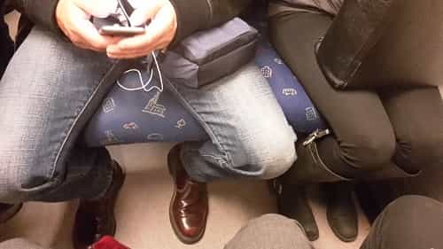
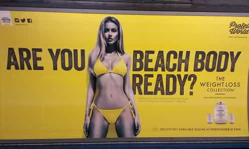
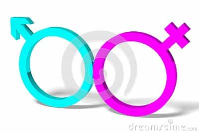

< < < Back
10 Ways Men Are Horribly Oppressing Women – Return Of Kings
Lately I’ve had a change of heart when it comes to feminism. I’ve started to notice the kind of everyday sexism and misogyny that women go through. I’m thinking, if I had daughters, would I want them to put up with all of the horrible stuff white cisgender men do on a regular basis?
Of course women need feminism. Yet there are some of them who still don’t know that. They can’t see how they themselves are oppressed, and make fun of feminists who call it like it is. That’s NOT okay. If you are one of those girls who do this, I’m talking to you. I want you to know about how sexism affects you every day, around the clock. So I’ve made a list of oppressive actions you probably encounter regularly.
Below are ten signs of how oppressed you actually are in your everyday life. Things you might not have noticed until now, but make your life miserable. Go through the list and check how many of them happened to you in the last 24 hours. Keep score, and at the end you’ll see to which degree you face oppression in a normal day.
1. A male stranger flirted with you and gave you compliments
Disgusting, isn’t it? Why men feel they have the right to give you attention and compliment your appearance is beyond me. Of course, they should get your consent to even speak to you in the first place, as one brave feminist has pointed out.
2. A man sitting next to you spread his legs
The problem of manspreading cannot be exaggerated. When a man sits next to you with his legs apart, he’s taking up the space you need to be a strong independent woman and spread your own legs to show your amazing vagina to the world.

This manspreading sadist should go to jail.
3. You felt cold at your workplace
I stand with you, cold woman.
The reason is that the air conditioning is set to make your male colleagues comfortable. How sexist. Women need to stand up for themselves and make the temperature better suited for them and their bodies.
4. The store you shop at has special products marketed for women
It’s hateful to women when companies make products specifically tailored for their needs. Women and men are exactly the same.
5. A male coworker stayed behind after you went home for the day
That means he will be making more money than you in the end. What a jerk! Women still earn less than men over a lifetime, and it doesn’t matter that it’s because men work harder, take more dangerous jobs, and so forth. It’s still sexist!
6. A man commented on a woman’s body or women’s bodies in general
That men like certain body types more than others is sexist and makes plus sized women feel bad about themselves. The truth is that ALL bodies are beautiful, ALL bodies are beach bodies.
7. You saw a commercial featuring a woman with a slim body

Does this woman look healthy to you? Didn’t think so.
Again, this makes plus sized women feel bad for not looking like the women they see in commercials. Thankfully, London’s Muslim mayor Sadiq Khan has decided to ban ads with sexy women from the city’s transport network. While I did say that all bodies are beautiful and great, slim bodies are clearly unnatural and must be the result of the model starving herself.
8. A man assumed your gender

Just because you look, talk and act like a woman, doesn’t mean you’re a woman. It’s science (feminist science). For all he knows, you could be a cat. If my future daughters would tell me they’re actually boys, I would accept it in a heartbeat. (But then I guess they wouldn’t be my daughters anymore, rather my sons. Which would mean that they wouldn’t be oppressed anymore, I guess. But they would still have female bodies, and I guess that counts as them being oppressed, maybe… This is all a bit confusing.)
9. A man tried to explain something to you that you already knew
Mens’ habit of bringing bullhorns to work has to stop!
How dare this mansplaining man assume that he knows something you don’t. How are you supposed to have a meaningful conversation with someone who insists on passing on information to you in a friendly way? It’s gross!
10. You encountered a Trump supporter
This one is self-explanatory. Trump is LITERALLY Hitler.
Finally, let’s check your oppression
I hoped you kept score. Now it’s time to see how bad your oppression really is.
1-3: While this might not seem so awful, and you could have it worse, it’s still outrageously misogynist.
4-6: I can only imagine the terror you must be feeling right now. Run to your safe space and don’t look back!
7-10: You need to call the police, now!
Read More: Women Are Experts At Wasting Men’s Time